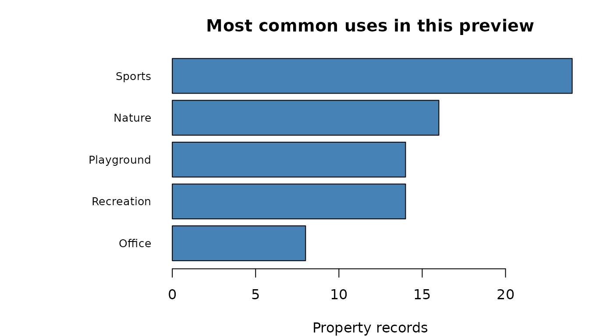

Your First Five Minutes with tampaBayOpenData
Source:vignettes/first-five-minutes.Rmd
first-five-minutes.RmdFind parks data and make a bar chart in base R.
Use 100 Hillsborough County property records saved on October 24, 2026, or fetch current records in step 3. The saved example works offline after installation.
2. Find a dataset
Search the offline catalog:
matches <- tbod_search_datasets("parks", source = "checked")
matches[, c("canonical_id", "publisher", "title")]
#> # A tibble: 6 × 3
#> canonical_id publisher title
#> <chr> <chr> <chr>
#> 1 tampa-parks City of Tampa Park polygons
#> 2 hillsborough-parks Hillsborough County Hillsborough County parks and…
#> 3 st-pete-parks City of St. Petersburg St. Petersburg parks
#> 4 clearwater-park-buffers City of Clearwater Clearwater park buffers
#> 5 pinellas-park-boundaries Pinellas County Pinellas County park boundari…
#> 6 pinellas-trail Pinellas County Pinellas Trail segmentsUse the hillsborough-parks ID below.
3. Load data
Choose one option.
Saved preview
Load the bundled data offline:
parks_file <- system.file("extdata", "parks-preview.rds",
package = "tampaBayOpenData", mustWork = TRUE)
parks <- readRDS(parks_file)Current records
With internet access, request up to 100 records:
parks <- tbod_get_dataset("hillsborough-parks", limit = 100)These are the first records returned, not a random sample. One park may have several property records.
Knitting this file uses the saved preview. Run the live request yourself to use current data.
4. Summarize
Check the first rows, row count, and column names:
head(parks[, c("NAME", "TYPE", "USES")])
#> # A tibble: 6 × 3
#> NAME TYPE USES
#> <chr> <chr> <chr>
#> 1 Alafia River Boat Ramp L Boat Ramp
#> 2 Alexander L Programmed
#> 3 All People's Life Center L Community
#> 4 Clayton L Sports
#> 5 Antioch L Sports
#> 6 Apollo Beach and Skate Park L SportsRec_Skate
nrow(parks)
#> [1] 100
names(parks)
#> [1] "OBJECTID_1" "FOLIONUMB" "NAME" "ADDR"
#> [5] "TYPE" "USES" "PROPOWNER" "PROPMNG"
#> [9] "GlobalID" "created_user" "created_date" "last_edited_user"
#> [13] "last_edited_date" "Shape__Area" "Shape__Length"Count the USES labels:
uses <- trimws(parks$USES)
uses[is.na(uses) | uses == ""] <- "Not reported"
park_uses <- table(uses)
park_uses <- sort(park_uses, decreasing = TRUE)
park_uses
#> uses
#> Sports Nature Playground Recreation
#> 24 16 14 14
#> Office SportsRec_Skate Boat Ramp Community
#> 8 7 3 3
#> Programmed Dog Sports_Recreation Trails
#> 3 2 2 2
#> Equestrian Maintenance
#> 1 1Blank or missing labels are grouped as “Not reported”.
5. Make a chart
Plot the five most common labels:
top_uses <- head(park_uses, 5)
par(mar = c(4, 10, 3, 1))
if (length(top_uses) > 0) {
barplot(rev(top_uses), horiz = TRUE, las = 1, cex.names = 0.8,
col = "steelblue", xlab = "Property records",
main = "Most common uses in this preview")
} else {
plot.new()
text(0.5, 0.5, "No property records returned")
}
Sports leads the saved preview, followed by Nature. Current results may differ.
The bars count property records in this preview, not unique parks across the county. Map outlines do not confirm boundaries, access, or opening hours.
If a live request fails or reports changed column names, see the retrieval troubleshooting guide.
Data: Hillsborough County Parks and Recreation properties, used under CC BY 4.0.
Next
Try another search term and inspect its columns with
names(). See discovery for
searches or retrieval for filters.
For a map, try capital improvements.